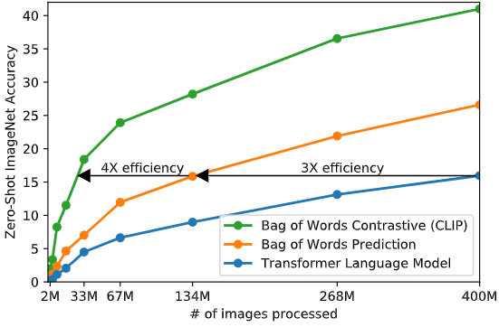
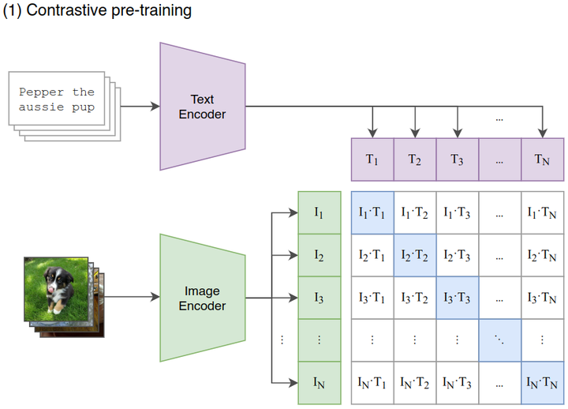
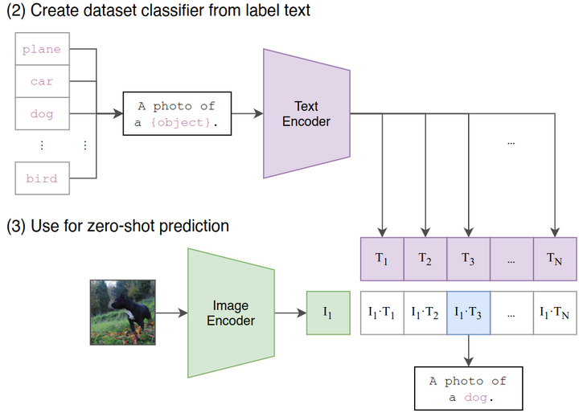
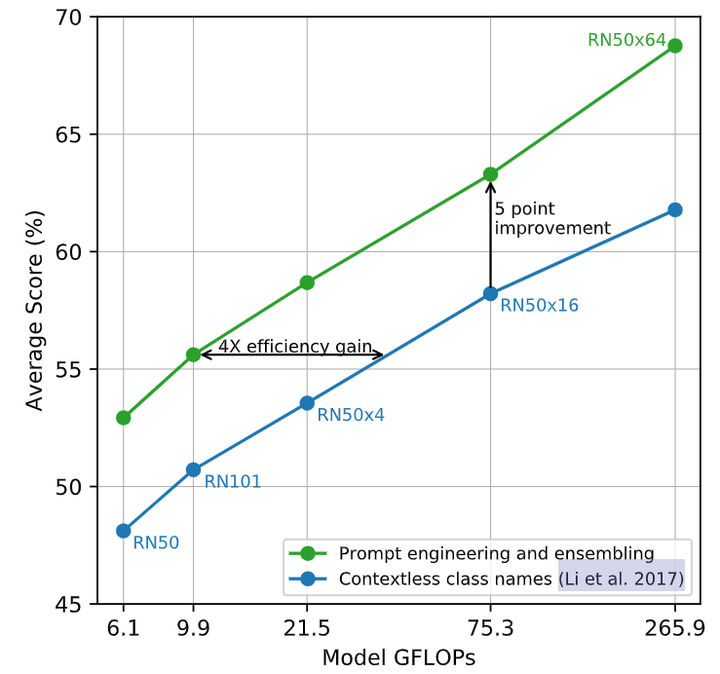
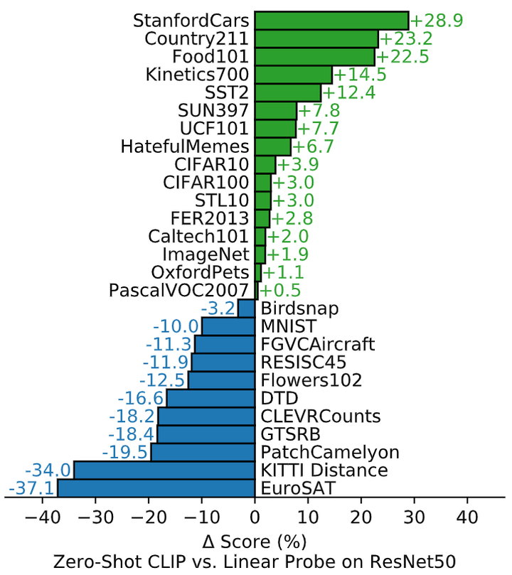
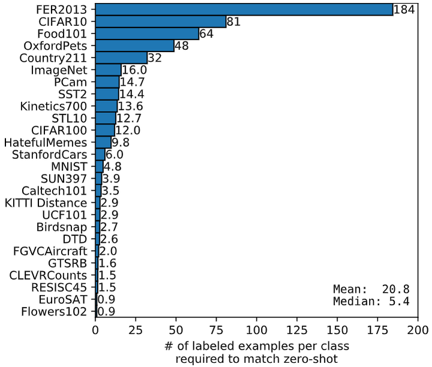
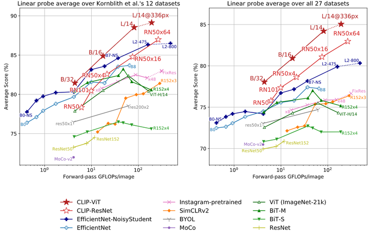
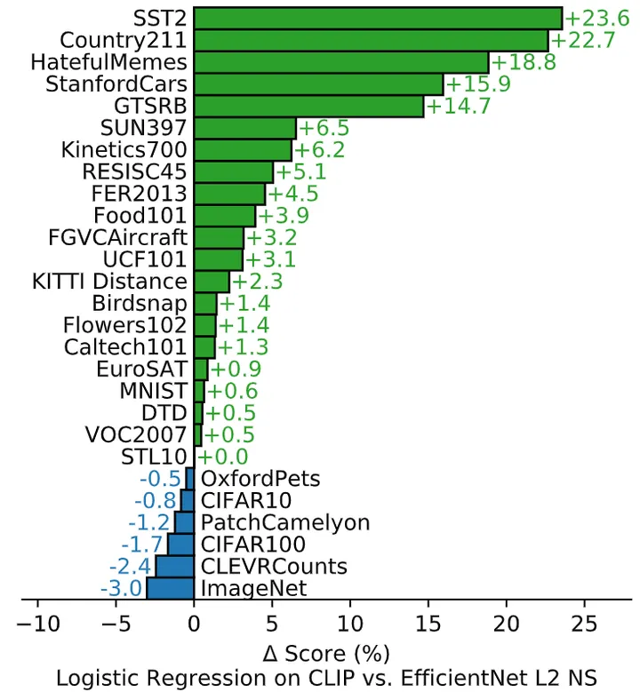

Learning Transferable Visual Models From Natural Language Supervision
Learning Transferable Visual Models From Natural Language
Supervision

官方解读博客：
CLIP: Connecting text and images (openai.com)
1 CLIP 论文解读：
1.1 背景和动机
[借助文本的监督方法属于有监督和无监督的一个中间地带] 借助文本的监督方法属于：”借助有限的标注数据进行有监督训练” 和 “借助几乎无限量的原始文本进行无监督训练” 二者之间的中间地带。相同的是，这两种方式都使用静态的 Softmax 分类器来执行预测，缺乏动态输出的机制。这严重限制了它们的灵活性和 “Zero-Shot” 能力。
[CLIP 方法及其结果] 在本文中作者研究了借助大规模自然语言监督训练图像分类器。互联网上存在大量公开可用的无标注文本数据集，作者创建了一个包含4亿对 (图像，文本) 的新数据集，并通过对比语言-图像预训练的方式训练了 CLIP 模型，是一种从自然语言监督中学习视觉模型的有效新方法。作者发现 CLIP 类似于 GPT 家族，在预训练期间学习执行一系列任务，包括动作识别，OCR，地理定位，ImageNet-1K 图像分类，细粒度图像分类任务等。作者通过在30多个现有数据集上对 CLIP 的 “Zero-Shot” 迁移学习性能进行测试，并发现 CLIP 可以与有监督训练得到的模型性能相当。比如，CLIP 在 ImageNet-1K 上的性能与专门有监督训练的 ResNet-50 相当，但是却没有使用 1.28M 的 ImageNet-1K 训练数据集。
1.2 自然语言的监督
本文方法的核心是从自然语言的监督中获得感知能力。只要是你的方法具备这一特点，都可以称之为 “接受了自然语言的监督”。那这种方法有哪些优势呢？其一就是可扩展性。因为它不需要经典机器学习方法中大量的有标签数据。
1.3 CLIP 的数据集
本文的一个主要特点是想利用互联网上大量公开可用的数据。由于现有的数据集 (MS-COCO 约100,000张，YFCC100M 高质量的仅仅约 15M 张，和 ImageNet-1K 大小相似) 不够大，可能会低估这一研究领域的潜力。
为了解决这个问题，作者构建了一个新的数据集，其中包含4亿对 (图像，文本) 对，这些数据来自互联网上各种公开可用的资源。而且这个数据清理得非常好，质量是非常高的，这也可能是 CLIP 这么强大的主要原因之一。结果数据集的总字数与用于训练 GPT-2 的 WebText 数据集相似，因此作者将此数据集称为 WebImageText (WIT)。
1.4 CLIP 的预训练方法
本文采取基于对比学习的高效预训练方法。作者的思路是这样的：一开始的方法是联合训练了一个处理图像的 CNN 和一个处理文本的 Transformer 模型，来预测图像的 caption。这个实验结果如下图1的蓝色曲线所示，可以看到其 Scalability 是很差的。橘红色曲线是预测文本的词袋，其效率是蓝色曲线的3倍。这两种方法都有一个关键的相似性，即试图去预测每幅图片对应的文字的确切单词是什么。但我们知道这可不是一件容易的事，因为与同一幅图像对应的描述、注释和相关文本种类繁多。
[
图1：不同方法的 Zero-Shot ImageNet-1K 精度
基于最近的图像对比表征学习方面的研究，可以仅预测整个文本与哪个图像配对，而不是该文本的确切单词，实验结果如下图1的绿色曲线所示，其效率是橘红色曲线的4倍。具体的做法是：
对比学习阶段：
如下图2所示，给定一个 Batch 的N个
(图片，文本) 对，图片输入给 Image Encoder 得到表征\(T_1\),\(T_2\),…,\(T_N\)，文本输入给 Text Encoder
得到表征\(I_1\),\(I_2\),…,\(I_N\)，作者认为\((I_j,T_j)\)属于是正样本，\((I_i,T_j)\)属于负样本。最大化N个正样本的
Cosine 相似度，最小化\(N^2-N\)个负样本的 Cosine 相似度。
[]
图2：CLIP 的对比学习阶段
作者从头开始训练 CLIP，不使用 ImageNet-1K 权重初始化 Image Encoder，也不使用预先训练的权重初始化 Text Encoder。同时使用线性投影 (权重为\(W_i,W_t\)) 将每个编码器的表征映射到多模态的嵌入空间。数据增强只使用随机裁剪，温度系数\(\tau\)的对数形式随整个模型一起训练。
Zero-Shot Transfer：如下图4所示，这个阶段是使用 CLIP 的预训练好的 Image Encoder 和 Text Encoder 来做 Zero-Shot Transfer。比如来一张 ImageNet-1K 验证集的图片，我们希望 CLIP 预训练好的模型能完成这个分类的任务。但是你想想看，这个 Image Encoder 是没有分类头 (最后的 Classifier) 的，也就是说它没法直接去做分类任务，所以说呢 CLIP 采用了下面的 Prompt Template 模式：
比如来一张 ImageNet-1K 验证集的图片，作者把它喂入 CLIP 预训练好的 Image Encoder，得到特征 \(I_1\)，接下来把所有类别的词汇 “cat”, “dog” 等，做成一个 prompt：”A photo of a {object}”，并将这个 prompt 喂入 CLIP 预训练好的 Text Encoder，依次得到特征\(T_1\),\(T_2\),…,\(T_N\)，最后看哪个的余弦相似度和 \(I_1\)最高，就代表该图片是哪个类别的。
那我们就可以注意到貌似这个 prompt 的加入很关键，正好弥补了 Image Encoder 没有分类头的问题，又正好用上了 CLIP 训练好的 Text Encoder。
而且重要的是，CLIP 的这种推理的方法摆脱了类别的限制，比如一张 “三轮车” 的图片，假设 ImageNet 里面没有 “三轮车” 这个类，那么基于 ImageNet 所训练的任何模型都无法正确地讲这个图片分类为 “三轮车” ，但是 CLIP 的范式是可以做到的，只需要去做成一个 prompt：”A photo of a {tricycle}”。
那么我们不禁要问：其他任务可以像这样使用 prompt 吗？或者什么样的 prompt 可以带来 Zero-Shot 的性能提升？作者做了实验发现：
对于细粒度图像分类任务，比如 Oxford-IIIT Pets 数据集，prompt 就可以设置为：”A photo of a {label}, a type of pet.”。比如 Food101 数据集，prompt 就可以设置为：”A photo of a {label}, a type of food.”。比如 FGVC Aircraft 数据集，prompt 就可以设置为：”A photo of a {label}, a type of aircraft.”
对于 OCR 任务，加上一些文本或者数字的引号可以提升性能。
对于卫星图像分类数据集，prompt 就可以设置为：”a satellite photo of a {label}.”。
[]
图4：CLIP 的 Zero-Shot Transfer
作者还开脑洞尝试了通过使用多个上下文的 prompt 来 Ensemble 多个 Zero-Shot 分类器，比如一个 prompt 是 ‘A photo of a big {label}”，另一个 prompt 是 ‘A photo of a small {label}”。作者观察到这样可以可靠地提高性能。在 ImageNet 上，作者集成了 80 个不同的上下文提示，这比上面讨论的单个默认提示提高了 3.5% 的性能。当一起考虑时，如下图5所示是 Prompt 工程和 Ensemble 策略如何改变一组 CLIP 模型的性能，可以看到 Prompt 工程和 Ensemble 策略将 ImageNet 精度提高了近 5%，其中蓝色的线代表直接嵌入类名的结果。
[]
图5：prompt 工程和 Ensemble 对 Zero-Shot 性能的影响
1.5 CLIP 的模型选择
对于 Image Encoder，作者尝试了改进版的 ResNet-50 和 ViT，对于 Text Encoder，作者使用改进版的 Transformer，作者使用了一个带有8个注意头的 63M 参数的12层512宽 Transformer 模型，其输入是一个大小为49152的词汇表的 BPE[2]小写表征。为了计算效率，最大序列长度为76。文本序列用 [SOS] 和 [EOS] 令牌括起来，[EOS] 处 Transformer 末层的输出被视为文本的特征，然后通过 LN，后接 Linear 层投影到多模态空间中。
至于模型缩放的问题，作者发现对于图像编码器 ResNet，同时缩放其深度，宽度，和输入分辨率的效果是最优的。而对于文本编码器 Transformer，作者只缩放模型的宽度，使其与 ResNet 宽度的计算增量成正比，而无需缩放深度，因为作者发现 CLIP 的性能对文本编码器的容量不太敏感。
1.6 零样本迁移 (Zero-Shot Transfer) 实验结果
本节中的 Zero-Shot 是指研究对未见过的数据集的泛化性能，也就是说一个模型训练号以后，在它从未见到过的新数据集上的性能如何。
作者进一步探索 CLIP 的 Zero-Shot 性能。为了说明这一点，作者比较了 CLIP 与基于 ResNet-50 完全监督的、正则化的逻辑回归分类器的性能。实验结果如下图7所示，在一共对比的27个数据集中，Zero-Shot CLIP 在16个数据集上面战胜了全监督的 ResNet-50 模型。
在细粒度分类任务上，可以观察到性能上的广泛差异。在其中两个数据集 (Stanford Cars 和 Food101) 上，Zero-Shot CLIP 在 ResNet-50 特征上的表现比逻辑回归好 20% 以上，而在另外两个数据集 (Flowers102 和 FGVCAircraft) 上，Zero-Shot CLIP 的表现比逻辑回归差 10% 以上。在 OxfordPets 和 Birdsnap 上，二者的表现更为接近。
在 ImageNet、CIFAR10/100、STL10 和 PascalVOC2007 等 “更广义的” 分类数据集上，二者的性能相对相似，在所有情况下，Zero-Shot CLIP 都有轻微的优势。在 STL10 上，CLIP 在不使用任何训练样本的情况下达到了 99.3% 的精度。在 Kinetics70 上，CLIP的表现比ResNet-50高出14.5%，在 UCF101 上，Zero-Shot CLIP 的性能也比 ResNet-50 的性能高出 7.7%。作者推测这估计是因为与 ImageNet 中以名词为中心的对象监督相比，自然语言对涉及动词的视觉概念提供了更广泛的监督。
也可以看到，Zero-Shot CLIP 在一些专业、复杂或抽象的任务上相当弱，如卫星图像分类 (EuroSAT 和RESISC45)、淋巴结肿瘤检测 (PatchCamelyon)、合成场景中的物体计数 (CLEVRCounts)、与自动驾驶相关的任务，如德国交通标志识别 (GTSRB)、识别到最近汽车的距离 (KITTI distance)。这些结果突出了 Zero-Shot CLIP 在更复杂任务中的较差能力。
[]
图7：Zero-Shot CLIP 与完全监督的基线相比具有竞争力
CLIP 零样本迁移的 Data Efficiency
除此之外，作者还进行了一个有趣的实验，即探究 CLIP 的零样本迁移的性能与其他模型的少样本学习性能的比较。这里的其他模型，作者使用的是 ImageNet-21K 数据集上面预训练的 BiT-M ResNet-152x2。如下图8所示的结果是零样本迁移 (Zero-Shot Transfer) 的 data efficiency，即少样本学习 (Few-Shot Learning) 在样本量为多少时的性能能够跟上 CLIP 零样本迁移的性能。可以发现每个数据集的效率差异很大，从有的数据集不到一个标记到有的数据集需要184个标记。比如，Flowers102 数据集可以在 1-shot 的情况下就能够跟上 CLIP 零样本迁移的性能，但是像 FER2013 数据集在 184-shot 的情况下才能够做得到。平均估计数据效率为每个类 20.8 个示例。对于 ImageNet 数据集，CLIP 零样本迁移的结果与在相同特征空间上训练的 16-shot 线性分类器的结果相当。
[]
图8：CLIP Zero-Shot Transfer 的 data efficiency
1.7 表征学习 (Representation Learning) 实验结果
为了更全面地评估 CLIP 模型的效果，作者进一步评估了它的表征学习能力。关于表征学习的评估方法，有很多方法来评估某个表征的质量，以及一个 “理想” 的表征应该具有哪些属性。一种比较常见的方法是冻住模型的骨干部分，只训练最后的分类器，通过在某个数据集上的精度来衡量提取到的特性的好坏。
如下图9所示是本文关于表征学习研究结果。作者首先研究了[3]论文的12个数据集，虽然像 ResNet-50 和 ResNet-101 这样的小型 CLIP 模型比在 ImageNet-1K 上训练的其他 ResNet 表现更好，但它们比在 ImageNet-21K (BiT-M) 上训练的 ResNet 表现更差。这些小型 CLIP 模型在具有类似计算需求的情况下，也不如 EfficientNet 系列的模型。作者继续在27个更多的数据集上做了相关研究，在这个更广泛的评估套件上，CLIP 的优势更加明显。所有 CLIP 模型，无论规模如何，在计算效率方面都优于其他模型。最佳模型的平均分数的提高从 2.6% 增加到 5%。
[]
图9：CLIP 模型与最先进的计算机视觉模型 Linear Probe 性能的比较
作者还研究了 CLIP 的特征在各种各样的数据集上与最佳 ImageNet 模型的特征的比较。最佳 ImageNet 模型的特征用的是 Noisy Student EfficientNet-L2 的最佳模型的特征。结果发现在27个数据集上，CLIP 取得了21个数据集的优势。CLIP 在需要 OCR (SST2，HatefulMemes) ，地理定位和场景识别 (Country211, SUN397) 的任务上改进最多。此外，CLIP 在细粒度的汽车和交通标志识别方面也做得更好 (Stanford Cars 和 GTSRB)。
[]
图10：CLIP 的特征在各种各样的数据集上优于最佳 ImageNet 模型的特征